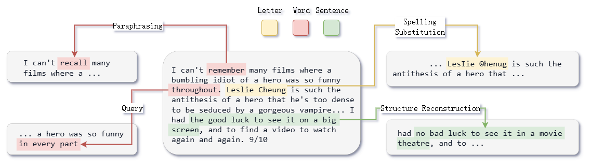

Project: Defending Adversarial Attacks by Embedding Backdoors
Abstract
As artificial intelligence technology becomes more widely applied and popularized, various attack methods against machine learning and deep learning models are continuously evolving. Among these attacks, adversarial attacks are particularly prominent. Adversarial attacks introduce small perturbations to sample data, which often lead models to make severe misjudgments. These perturbations are usually imperceptible to the human eye. To mitigate the harm caused by adversarial attacks, the academic community has conducted numerous related defensive studies, primarily focusing on two strategies: adversarial training and adversarial example detection. Both methods can enhance model robustness and effectively defend against adversarial attacks, but they are resource-intensive and significantly impact the classification performance.
To address the shortcomings of existing methods, this thesis proposes a security strategy using bijective backdoor embedding to defend against adversarial attacks in text classification models. This approach leverages the commonalities in generating anomalous samples between backdoor embedding and adversarial attacks, both of which involve small modifications to the original samples input into the text classification model. In adversarial attacks, these small modifications manifest as perturbations that do not affect the decision boundary but instead influence the model’s relative positioning of these samples, misleading the model into making incorrect classifications. In backdoor embedding, these small modifications take the form of backdoor triggers in the training data, influencing classification results by altering the decision boundary. By using backdoor embedding to enhance model robustness, this method adapts the model’s decision boundary to accommodate unknown changes in input samples, improving resilience to unknown perturbations and enhancing overall performance.
Chapter 1 Background
As society advances, internet technology and human activities are becoming more closely integrated, and artificial intelligence technology is also becoming increasingly widespread. Influenced by this trend, many industries are gradually introducing AI-related technologies, with image recognition, natural language processing, and recommendation algorithms emerging as key areas of growing impact. In recent years, several large language models have attracted widespread attention, such as OpenAI's GPT and Baidu's ERNIE. These models can perform tasks like text summarization, sentiment analysis, text generation, and natural language reasoning. In many of these downstream tasks, text classification plays a central role, including sentiment analysis, spam detection, and automated distribution of review notes. Text classification involves assigning open text to predefined category labels, with the relationship between category labels and training data being one of the critical factors in training a text classification model.
However, despite these technologies demonstrating strong capabilities across various fields, they still have limitations. Currently, common machine learning and neural network models face many security risks, which include degrading user experience and data leaks. In the context of text classification models, adversarial attacks pose a particularly significant threat. This type of attack primarily involves adding small perturbations to input data to mislead the model into assigning incorrect category labels, thereby reducing the model's performance. These subtle perturbations, usually added by attackers, are difficult for the human eye to detect yet can be highly damaging to the model. Adversarial attacks are characterized by high concealment, automation, and unpredictability, making them challenging for conventional defense mechanisms to counter effectively.
As AI applications continue to expand, adversarial attacks are appearing across an increasing number of domains. In financial services, adversarial attacks may lead to incorrect credit approvals; in healthcare, they may mislead diagnostic results, endangering patient health; and in other fields, there are numerous adversarial attacks that urgently require research and mitigation.